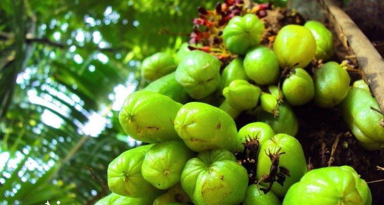

|
|
Home About Us Support Us Contact Us |
Belimbing bulu/wuluhBelimbing wuluh adalah buah yang asam. Meskipun tidak semanis buah belimbing biasa tetapi ada banyak manfaat belimbing wuluh yang akan membuat kamu takjub. Manfaat belimbing wuluh ini sangat terkait dengan kesehatan dan organ reproduksi. Belimbing wuluh memiliki nama latin Averrhoa bilimbi. Tanaman ini termasuk ke dalam genus Averrhoa dan famili Oxalidaceae. Secara Internasional, belimbing wuluh dikenal dengan nama bilimbi. Belimbing wuluh memang memiliki kekerabatan dengan belimbing (starfruit). Buah belimbing wuluh ditemukan di wilayah Asia Tenggara seperti Indonesia, Malaysia, dan Filipina. Kini, belimbing wuluh telah dibudidayakan di wilayah tropis. Di berbagai negara, belimbing wuluh dikenal dengan nama lain seperti kamias, belimbing asam, blimbin, birambi, bilincha, mimbro, tirigur, vinagrillo, cucumber tree, dan lainnya. Kandungan gizi dan manfaat belimbing wuluhBelimbing wuluh mengandung berbagai zat gizi yang sangat diperlukan oleh tubuh. Di dalam buah belimbing wuluh mengandung protein, serat, vitamin, dan mineral. Kandungan vitamin yang ada di dalam belimbing wuluh di antaranya adalah vitamin A, vitamin C, dan vitamin B kompleks. Beberapa kandungan mineral pada belimbing wuluh seperti fosfor, kalsium, dan zat besi. Selain itu, belimbing wuluh juga mengandung antioksidan yang memiliki banyak manfaat. Ada kandungan zat pada belimbing wuluh bersifat astringen. Mungkin bagi sebagian besar orang, rasa belimbing wuluh tidaklah selezat rasa belimbing. Belimbing wuluh memang memiliki rasa yang asam bahkan sangat asam. Namun siapa sangka, di balik rasanya yang asam, ternyata ada berbagai manfaat belimbing wuluh yang jarang diketahui banyak orang. Berikut ini adalah beberapa manfaat belimbing wuluh bagi tubuh: 1. Meredakan batuk dan pilekApabila Anda batuk maka tambahkanlah ekstrak buah belimbing wuluh ke sirup obat batuk yang hendak Anda minum. Kandungan di dalam belimbing wuluh bisa meredakan batuk dan pilek yang sedang Anda alami. Selain itu, rasa asam pada belimbing wuluh bisa membuat sirup obat batuk Anda terasa lebih menyegarkan. 2. Meredakan demam dan fluCuaca yang tidak mendukung sering kali membuat tubuh mudah terserang demam dan flu. Hal ini akan lebih rentan bila daya tahan tubuh Anda sedang lemah. Jika Anda terkena demam gunakanlah belimbing wuluh. Manfaat belimbing wuluh bisa digunakan untuk meredakan demam dan flu. Kandungan vitamin C yang melimpah pada belimbing wuluh akan meningkatkan sistem kekebalan tubuh Anda. Rebuslah buah belimbing wuluh lalu konsumsilah air rebusan belimbing wuluh. 3. Mengatasi alergiTidak sedikit orang yang menderita hipersensitivitas atau alergi. Alergi yang dimiliki oleh orang-orang tidaklah sama. Ada yang alergi makanan tertentu, obat tertentu, udara atau debu, dan lainnya. Gangguan alergi ini dikarenakan adanya masalah pada sistem kekebalan tubuh terhadap zat tertentu. Bagi Anda yang terindikasi memiliki alergi secara medis maka konsumsilah jus buah belimbing wuluh secara teratur. Ini dapat mengurangi alergi yang Anda miliki. 4. Mengobati infeksi akibat gigitan seranggaBelimbing wuluh juga memiliki manfaat untuk melawan bakteri yang masuk melalui gigitan serangga. Kandungan zat yang terdapat pada batang dan daun belimbing wuluh bersifat antibiotik yang bisa mengatasi infeksi kuman akibat gigitan serangga. Anda bisa mendapatkan manfaat belimbing wuluh yang satu ini dengan cara menghaluskan daun dan batang dari pohon belimbing wuluh. Setelah halus, campurlah bersama bawang putih hingga menjadi seperti pasta. 5. Mengobati penyakit gondonganApakah Anda tahu cara mengobati penyakit gondongan selain dengan menggunakan obat dan blau? Pengobatan penyakit gondongan secara alami bisa dilakukan dengan menggunakan belimbing wuluh. Belimbing wuluh bermanfaat untuk mengobati penyakit gondongan. Kandungan pada batang dan daun belimbing wuluh bisa melawan virus gondok. Pilihlah tanaman belimbing wuluh yang masih muda lalu haluskan daun dan batangnya bersama bawang putih sampai menjadi pasta. Ini bisa mengobati gondongan dan meredakan pembengkakan. 6. Mengatasi penyakit diabetesBagi Anda yang menderita penyakit diabetes, Anda bisa menggunakan belimbing wuluh. Belimbing wuluh dapat mengontrol kadar gula darah Anda. Manfaat belimbing wuluh juga bisa menurunkan kadar gula darah. Kadar gula darah secara berangsur bisa menjadi normal kembali dengan menggunakan belimbing wuluh. Konsumsilah jus buah belimbing wuluh secara teratur. Selain itu, Anda juga bisa mengonsumsi dalam belimbing wuluh yang telah direbus. 7. Mengatasi tekanan darah tinggiManfaat belimbing wuluh yang lain adalah untuk mengatasi tekanan darah tinggi atau hipertensi. Seseorang yang memiliki tekanan darah lebih dari 140/90 mmHg terus menerus maka bisa mengambil manfaat dari belimbing wuluh. Konsumsilah belimbing wuluh yang telah direbus bersama sisa air rebusan. Anda bisa mengonsumsinya pada pagi hari di saat tubuh telah cukup beristirahat. Lakukanlah secara teratur hingga tekanan darah normal kembali. 8. Mengatasi wasirWasir adalah salah satu masalah medis yang membuat seseorang menjadi tidak nyaman. Gejala wasir ini bisa diobati secara alami tanpa harus menggunakan obat ambeien. Belimbing wuluh bermanfaat untuk meredakan pembengkakan pada wasir dan rasa nyeri. 9. Menurunkan berat badanBerat badan merupakan salah satu indikator kesehatan tubuh. Tubuh yang sehat biasanya memiliki berat badan yang normal atau ideal. Bagi Anda yang memiliki masalah berat badan berlebih bahkan obesitas maka Anda bisa menggunakan belimbing wuluh. Manfaat belimbing wuluh bisa digunakan untuk menurunkan berat badan. Di dalam belimbing wuluh, terdapat kandungan zat antihiperlipidemik. Zat ini bisa mencegah peningkatan berat badan tanpa efek samping. 10. Meredakan nyeriJangan terburu-buru mengonsumsi obat untuk mengatasi nyeri yang dialami. Belimbing wuluh berkhasiat meredakan nyeri tanpa efek samping. Ini dikarenakan kandungan di dalam belimbing wuluh bersifat antiinflamasi dan analgesik. Ambillah beberapa helai daun belimbing wuluh yang masih muda lalu haluskan bersama sedikit air hingga menjadi pasta. Setelah itu, Anda oleskan pada bagian yang nyeri atau perih. Lakukan seperti ini sebanyak 2 sampai 3 kali dalam sehari. Untuk belimbing wuluh cara penyajiannya kalian bisa membuat manisan belimbing wuluh : | |
 © Healty © Healty |
|